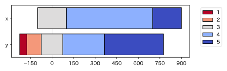

中央揃え帯グラフ
Design of Diverging Stacked Bar Charts for Likert Scales and Other Applications という論文で、次のようなグラフが提案されています。ここで1〜5は、例えば1は「反対」、2は「やや反対」、3は「どちらでもない」、4は「やや賛成」、5は「賛成」のような、いわゆるLikert（リッカート）尺度の値です。

この “diverging stacked bar chart” は、直訳すれば「発散型積み上げ棒グラフ」となりますが、“stacked bar chart” は日本では「帯グラフ」と呼ぶのが一般的ですし、両側に伸びるという意味の “diverging” を「発散型」と訳してもわかりにくいので、ここでは「中央揃え帯グラフ」と呼んでみました。特に中央が「どちらでもない」を表すLikert尺度の可視化に向いています。
import numpy as np
import pandas as pd
from collections import Counter
import matplotlib.pyplot as plt
from matplotlib.ticker import MaxNLocator
# データの例
x = [3]*200 + [4]*600 + [5]*200
y = [1]*50 + [2]*100 + [3]*150 + [4]*290 + [5]*410
df = pd.DataFrame([Counter(x), Counter(y)], index=["x", "y"])
df = df.fillna(0).astype(int)
df = df.reindex(columns=range(min(x+y), max(x+y)+1), fill_value=0)
df = df[::-1]
n = len(df.columns)
def get_offset(row):
mid_idx = n // 2
if n % 2 == 1:
return -(row.iloc[:mid_idx].sum() + row.iloc[mid_idx] / 2)
else:
return -row.iloc[:mid_idx].sum()
offsets = df.apply(get_offset, axis=1)
fig, ax = plt.subplots(figsize=(6.4, 2))
cmap = plt.get_cmap("coolwarm_r")
colors = cmap(np.linspace(0, 1, n))
y_pos = np.arange(len(df.index))
for i, col in enumerate(df.columns):
widths = df[col]
lefts = offsets + df.iloc[:, :i].sum(axis=1)
ax.barh(y_pos, widths, left=lefts, color=colors[i], edgecolor="black", label=col)
ax.set_yticks(y_pos)
ax.set_yticklabels(df.index)
ax.axvline(0, color='gray', linewidth=1, zorder=-1)
ax.legend(bbox_to_anchor=(1.05, 1), loc='upper left')
min_x = offsets.min()
max_x = (offsets + df.sum(axis=1)).max()
ax.set_xlim(1.05 * min_x - 0.05 * max_x, 1.05 * max_x - 0.05 * min_x)
# 目盛を整数に限る
ax.xaxis.set_major_locator(MaxNLocator(integer=True))
# 見やすい位置に移動
plt.tight_layout()
plt.show()
ここでは帯の長さを数にしましたが、割合にすることもできます。
「賛成」側を暖色系にするか寒色系にするかは悩ましいところです。ここでは元論文に合わせて「賛成」側を寒色系にしました。賛成と反対、どっちが暖色系？もご覧ください。逆の色にするには "coolwarm_r" を "coolwarm" にします。